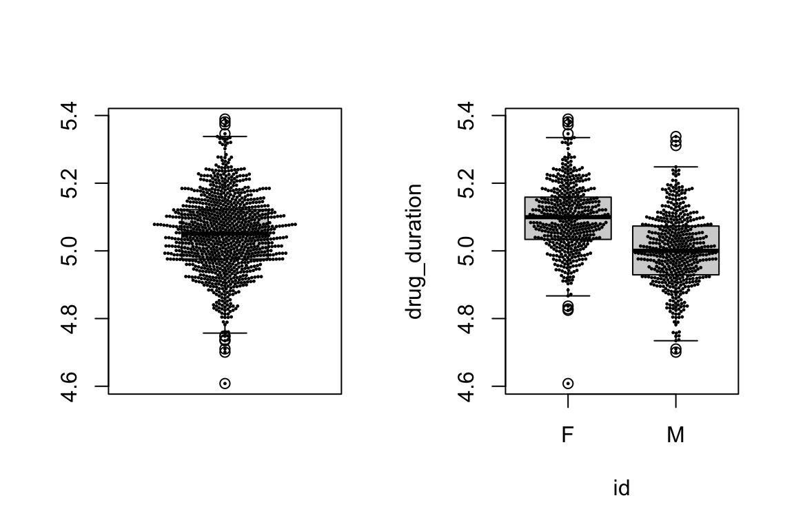

Formula interface and multi panel plots in ggplot2
Robert Settlage
2021-09-20
Last updated: 2021-10-12
Checks: 7 0
Knit directory: STAT5014_Fall2021_website/
This reproducible R Markdown analysis was created with workflowr (version 1.6.2). The Checks tab describes the reproducibility checks that were applied when the results were created. The Past versions tab lists the development history.
Great! Since the R Markdown file has been committed to the Git repository, you know the exact version of the code that produced these results.
Great job! The global environment was empty. Objects defined in the global environment can affect the analysis in your R Markdown file in unknown ways. For reproduciblity it’s best to always run the code in an empty environment.
The command set.seed(20210816) was run prior to running the code in the R Markdown file. Setting a seed ensures that any results that rely on randomness, e.g. subsampling or permutations, are reproducible.
Great job! Recording the operating system, R version, and package versions is critical for reproducibility.
Nice! There were no cached chunks for this analysis, so you can be confident that you successfully produced the results during this run.
Great job! Using relative paths to the files within your workflowr project makes it easier to run your code on other machines.
Great! You are using Git for version control. Tracking code development and connecting the code version to the results is critical for reproducibility.
The results in this page were generated with repository version 00650cd. See the Past versions tab to see a history of the changes made to the R Markdown and HTML files.
Note that you need to be careful to ensure that all relevant files for the analysis have been committed to Git prior to generating the results (you can use wflow_publish or wflow_git_commit). workflowr only checks the R Markdown file, but you know if there are other scripts or data files that it depends on. Below is the status of the Git repository when the results were generated:
Ignored files:
Ignored: .DS_Store
Ignored: .Rhistory
Ignored: .Rproj.user/
Ignored: analysis/Week_6_R_functions_logic_good_programming_practices_cache/
Ignored: analysis/Week_7_matrix_speed_apply_cache/
Untracked files:
Untracked: analysis/Week_7_matrix_speed_apply.Rmd
Untracked: sensory_raw.RDS
Unstaged changes:
Modified: analysis/_site.yml
Note that any generated files, e.g. HTML, png, CSS, etc., are not included in this status report because it is ok for generated content to have uncommitted changes.
These are the previous versions of the repository in which changes were made to the R Markdown (analysis/Week_4_formula_interface_multipanel_ggplot2_plots.Rmd) and HTML (docs/Week_4_formula_interface_multipanel_ggplot2_plots.html) files. If you’ve configured a remote Git repository (see ?wflow_git_remote), click on the hyperlinks in the table below to view the files as they were in that past version.
| File | Version | Author | Date | Message |
|---|---|---|---|---|
| html | 940eb7a | rsettlag | 2021-10-11 | Build site. |
| html | 61dccca | rsettlag | 2021-10-05 | Build site. |
| html | bea89e9 | rsettlag | 2021-10-05 | Build site. |
| html | 272daa2 | rsettlag | 2021-09-29 | Build site. |
| html | 6405d42 | rsettlag | 2021-09-28 | Build site. |
| html | f00e400 | rsettlag | 2021-09-23 | Build site. |
| Rmd | e36b848 | rsettlag | 2021-09-23 | wflow_publish(republish = TRUE, all = TRUE, update = TRUE) |
| html | e36b848 | rsettlag | 2021-09-23 | wflow_publish(republish = TRUE, all = TRUE, update = TRUE) |
| html | 3834be1 | rsettlag | 2021-09-21 | updated what’s next |
| html | 10f3630 | rsettlag | 2021-09-21 | fixing plots – hopefully |
| html | b7fc837 | rsettlag | 2021-09-21 | Build site. |
| Rmd | 5f720a9 | rsettlag | 2021-09-21 | wflow_publish(republish = TRUE, all = TRUE, update = TRUE) |
| html | 5f720a9 | rsettlag | 2021-09-21 | wflow_publish(republish = TRUE, all = TRUE, update = TRUE) |
| Rmd | 02e381f | rsettlag | 2021-09-21 | adding week 4 |
| html | 02e381f | rsettlag | 2021-09-21 | adding week 4 |
Source unknown
Today’s Agenda
- Review: Multipanel plots and ggplot2
- Formula interface
- Multipanel ggplot2 plots
Data wranging – common plots
- histogram
- box plot vs violin plot
- scatter plot
- pie chart, …
don’t forget color and shape as dimensions
Plot inspiration
http://www.r-graph-gallery.com
Multipanel base plot
Multipanel plots in base R means manipulating the canvas.
This site has everything needed to make fantastic plots using base functions:
Multipanel base plot example
https://r-charts.com/base-r/combining-plots/
# Data
set.seed(6)
x <- rexp(50)
layout(matrix(c(2, 0, 1, 3), nrow = 2, ncol = 2, byrow = TRUE),
widths = c(3, 1),
heights = c(1, 3), respect = TRUE)
# Top and right margin of the main plot
par(mar = c(5.1, 4.1, 0, 0))
plot(x, cex=2, pch=20)
# Left margin of the histogram
par(mar = c(0, 4.1, 0, 0))
hist(x, main = "", bty = "n", axes = FALSE, ylab = "")
# Bottom margin of the boxplot
par(mar = c(5.1, 0, 0, 0))
# Boxplot without plot region box
par(bty = "n")
# Boxplot without axes
boxplot(x, axes = FALSE)
Margins are the key
https://www.r-graph-gallery.com/74-margin-and-oma-cheatsheet.html
# Margins area
par(oma=c(3,3,3,3)) # all sides have 3 lines of space
par(mar=c(5,4,4,2) + 0.1)
# Plot
plot(0:10, 0:10, type="n", xlab="X", ylab="Y") # type="n" hides the points
# Place text in the plot and color everything plot-related red
text(5,5, "Plot", col="red", cex=2)
box(col="red")
# Place text in the margins and label the margins, all in forestgreen
mtext("Margins", side=3, line=2, cex=2, col="forestgreen")
mtext("par(mar=c(b,l,t,r))", side=3, line=1, cex=1, col="forestgreen")
mtext("Line 0", side=3, line=0, adj=1.0, cex=1, col="forestgreen")
mtext("Line 1", side=3, line=1, adj=1.0, cex=1, col="forestgreen")
mtext("Line 2", side=3, line=2, adj=1.0, cex=1, col="forestgreen")
mtext("Line 3", side=3, line=3, adj=1.0, cex=1, col="forestgreen")
box("figure", col="forestgreen")
# Label the outer margin area and color it blue
# Note the 'outer=TRUE' command moves us from the figure margins to the outer margins.
mtext("Outer Margin Area", side=1, line=1, cex=2, col="blue", outer=TRUE)
mtext("par(oma=c(b,l,t,r))", side=1, line=2, cex=1, col="blue", outer=TRUE)
mtext("Line 0", side=1, line=0, adj=0.0, cex=1, col="blue", outer=TRUE)
mtext("Line 1", side=1, line=1, adj=0.0, cex=1, col="blue", outer=TRUE)
mtext("Line 2", side=1, line=2, adj=0.0, cex=1, col="blue", outer=TRUE)
box("outer", col="blue")
Elements of a good figure | EDA stage
- simple to create
- shows only what you need it to
- doesn’t take a lot of explaination
- YOU are the primary audience (at first)
- has enough detail to give insight
That always means exploring the available factors and relationships

Elements of a good figure | Publication stage
- ok, wow factor
- shows only what you need it to
- draws the reader in
- invokes inquiry
- is fully self contained with legend AND caption
- simple is GENERALLY better (meaning less factors in play)
- all these rules are out the window for art
ggplot2
Another Hadley Wickam creation. Lot’s of love/hate for it. I mostly like it. I find a few types of plots are SUPER simple via ggplot2 that might be very time consuming in base graphics. I also find that I spend more time in customizing away the ggplot look if I am trying to make a figure for a pub.
The basic idea is that creating figures is a step wise process of building a plot.
- you need data
- you need a mapping of data to the plot features
- you need a graphical object
You mix these and wallah!!
And, like everything else, people are opinionated …
https://flowingdata.com/2016/03/22/comparing-ggplot2-and-r-base-graphics/
https://simplystatistics.org/2016/02/11/why-i-dont-use-ggplot2/
http://varianceexplained.org/r/why-I-use-ggplot2/
Example
Quick example of a basic plot using both base graphics and ggplot2
par(oma=c(0.5,1,0.5,1))
plot(x=mtcars$mpg, y=mtcars$disp, pch=20, col=as.factor(mtcars$gear),
xlab="mpg", ylab="disp", main="Fuel economy declines as displacement increases")
legend("topright", legend=levels(as.factor(mtcars$gear)),
title="gears",col=1:3,pch=20)
library(ggplot2)
ggplot(data=mtcars, aes(x=mpg, y=disp, color=as.factor(gear))) +
geom_point() +
theme(panel.background = element_rect(fill = "white", colour = "grey50"),
legend.position = c(0.85, 0.85)) +
labs(color = "gears",
title = "Fuel economy declines as displacement increases")
Formula interface
Consider the following data:
| duration | sex | age | hair_color |
|---|---|---|---|
| 4.905549 | M | 48 | brown |
| 5.253092 | F | 54 | blond |
| 5.153391 | F | 32 | brown |
| 5.141874 | F | 57 | brown |
| 5.167814 | F | 24 | red |
| 5.080149 | F | 46 | blond |
Given this data, we might envision wanting to evaluate relationships amonst the variables to answer questions like how does duration of drug respons change based on sex, or age, or sex and age. How do we capture that in a simple way???
Formulas
Formulas in R are objects. We create them like any other object, through assignment.
f1 <- drug_time ~ sex
f2 <- drug_time ~ sex + age
class(f1)[1] "formula"The variables on both sides of the ~ are named like in your linear models class – dependent variable ~ independent variable
Sided formulas
Note that you can have 1- and 2-sided formula:
1-sided
always right side variables, ie independent~ x2-sided
y ~ x
Formula operators
+read as and
-read as minus|read as conditioned on
:interaction between
*crossing of variables, including the interaction
%in%nesting
^to limit crossing
I()as-is, useful for example when includingx^2.means all
A few functions of formula: terms, all.vars, update
myformula <- y ~ (a + b + c)^2
terms(myformula)y ~ (a + b + c)^2
attr(,"variables")
list(y, a, b, c)
attr(,"factors")
a b c a:b a:c b:c
y 0 0 0 0 0 0
a 1 0 0 1 1 0
b 0 1 0 1 0 1
c 0 0 1 0 1 1
attr(,"term.labels")
[1] "a" "b" "c" "a:b" "a:c" "b:c"
attr(,"order")
[1] 1 1 1 2 2 2
attr(,"intercept")
[1] 1
attr(,"response")
[1] 1
attr(,".Environment")
<environment: R_GlobalEnv>update(myformula,"~.+d*e")y ~ a + b + c + d + e + a:b + a:c + b:c + d:eFormula interface and figures
Many plotting functions take formula. The ggformula package extends ggplot2 to also take formula.
plot(duration~age, data=drug_info, col=as.factor(sex), pch=20)
boxplot(duration~sex, data=drug_info)
library(beeswarm)
beeswarm(duration~sex, data=drug_info, add=T, cex=0.3, pch=20, col=sex+1)
library(ggformula)Loading required package: ggstance
Attaching package: 'ggstance'The following objects are masked from 'package:ggplot2':
geom_errorbarh, GeomErrorbarhLoading required package: scalesLoading required package: ggridges
New to ggformula? Try the tutorials:
learnr::run_tutorial("introduction", package = "ggformula")
learnr::run_tutorial("refining", package = "ggformula")gf_point(duration~age, data = drug_info, color=~sex, size=~log(duration)-1)
Note on code chunk output
Do you REALLY want all the ggformula load info in your report? Consider having a setup chunk.
Also note the options that are set.
gf_point(duration~age, data = drug_info, color=~sex, size=~log(duration)-1)
GGplot2 and multipanel
Multipanel plots using ggplot.
First, if what you want is essentially similar plot, but seperated by a factor level, consider faceting.
Second, if instead, you want to merge dissimilar plots into a single figure, consider ggarrange (ggpubr) or a similar canvas controlling package (gridExtra, patchwork, …).
There is, of course, a book… https://ggplot2-book.org/arranging-plots.html
ggplot(data=drug_info, aes(x=age, y=duration)) +
geom_point() +
facet_grid(sex~hair_color)
I will leave the other packages to you.
Next up
- Homework 3
- Loading, munging, summarizing data using tidyverse
sessionInfo()R version 4.0.3 Patched (2020-11-08 r79409)
Platform: x86_64-apple-darwin17.0 (64-bit)
Running under: macOS Big Sur 10.16
Matrix products: default
BLAS: /Library/Frameworks/R.framework/Versions/4.0/Resources/lib/libRblas.dylib
LAPACK: /Library/Frameworks/R.framework/Versions/4.0/Resources/lib/libRlapack.dylib
locale:
[1] en_US.UTF-8/en_US.UTF-8/en_US.UTF-8/C/en_US.UTF-8/en_US.UTF-8
attached base packages:
[1] stats graphics grDevices utils datasets methods base
other attached packages:
[1] ggformula_0.10.1 ggridges_0.5.3 scales_1.1.1 ggstance_0.3.5
[5] ggplot2_3.3.5 beeswarm_0.4.0 workflowr_1.6.2
loaded via a namespace (and not attached):
[1] tidyselect_1.1.1 xfun_0.26 bslib_0.3.1 purrr_0.3.4
[5] haven_2.4.3 labelled_2.8.0 colorspace_2.0-2 vctrs_0.3.8
[9] generics_0.1.0 htmltools_0.5.2 yaml_2.2.1 utf8_1.2.2
[13] rlang_0.4.11 jquerylib_0.1.4 later_1.3.0 pillar_1.6.3
[17] glue_1.4.2 withr_2.4.2 DBI_1.1.1 tweenr_1.0.2
[21] lifecycle_1.0.1 plyr_1.8.6 mosaicCore_0.9.0 stringr_1.4.0
[25] munsell_0.5.0 gtable_0.3.0 evaluate_0.14 forcats_0.5.1
[29] labeling_0.4.2 knitr_1.36 fastmap_1.1.0 httpuv_1.6.3
[33] fansi_0.5.0 highr_0.9 Rcpp_1.0.7 promises_1.2.0.1
[37] jsonlite_1.7.2 farver_2.1.0 fs_1.5.0 hms_1.1.1
[41] ggforce_0.3.3 digest_0.6.28 stringi_1.7.5 dplyr_1.0.7
[45] polyclip_1.10-0 rprojroot_2.0.2 grid_4.0.3 tools_4.0.3
[49] magrittr_2.0.1 sass_0.4.0 tibble_3.1.5 tidyr_1.1.4
[53] crayon_1.4.1 whisker_0.4 pkgconfig_2.0.3 MASS_7.3-54
[57] ellipsis_0.3.2 assertthat_0.2.1 rmarkdown_2.11 R6_2.5.1
[61] git2r_0.28.0 compiler_4.0.3